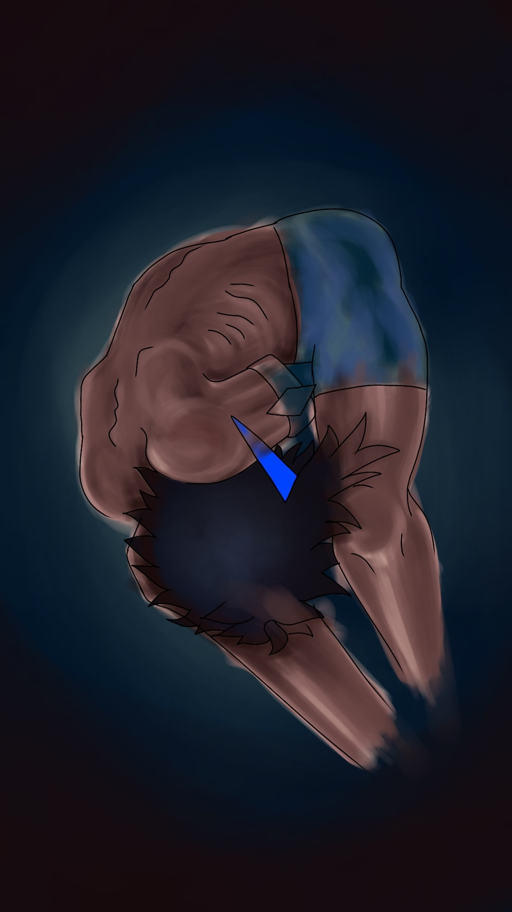

.png) Phantom protocol
Phantom protocol
«Phantom protocol»: Обьяснения концовки "Ничтожество"
Концовка «Ничтожество» (Плохая — Жалость или высокомерие игрока)

Условие получения
На протяжении финального диалога игрок проявлял по отношению к Найну либо жалость свысока, либо высокомерие. Типичные фразы: «держись», «жизнь прекрасна», «ты справишься, я в тебя верю», «всё будет хорошо, просто не сдавайся», «ты должен бороться», «посмотри на мир иначе». Игрок видит в Найне не личность, а объект для «спасения» — жертву, которую нужно пожалеть или подбодрить, не вникая в реальность её боли. При этом игрок не даёт пустых утешений в абсурдном ключе (как в «Солнечном зайчике»), а именно навязывает оптимизм и жалость, не признавая за Найном права на его собственное восприятие.
Локация (начало сцены)
Лаборатория. Финал. Найн на столе, подключённый к аппаратам жизнеобеспечения.
Ключевое действие персонажа
Лицо Найна искажает судорога. Это не судорога физической боли (аппараты работают, тело не повреждено новой травмой). Это выражение глубокого экзистенциального стыда. Стыда за то, что он вообще открылся этому человеку. Стыда за свою историю, которую он рассказал. Стыда за то, что надеялся на понимание.
Финальный диалог (Найн произносит)
«Я... мне было интересно рассказать тебе свою историю. Я думал, ты... поймешь. Жаль, что для тебя я всего лишь ничтожество, подтверждающее твою теорию. А знаешь что самое страшное? Теперь... после разговора с тобой... я тоже так думаю.»
Смысл концовки (полная расшифровка)
Самое страшное в этой концовке — не смерть и не боль. А то, что последняя связь Найна с миром (диалог с игроком) не дала ему понимания, а отняла последние следы самоуважения. Он пришёл к игроку с историей — возможно, надеясь, что его увидят как личность. А встретил или снисходительную жалость («бедный, держись»), или высокомерный оптимизм («жизнь прекрасна, просто не думай о плохом»). Оба варианта отрицают реальность Найна. Жалость говорит: «ты слабый, я над тобой возвышаюсь, позволяя себе сочувствовать». Высокомерие говорит: «ты просто неправильно смотришь на вещи, будь как я». В обоих случаях игрок не слышит его. Игрок использует Найна как объект — для подтверждения своей роли «спасателя» или своей теории о том, что «все проблемы от неправильного настроя». В результате Найн после разговора начинает думать о себе так же, как игрок — как о ничтожестве. Не потому, что он таким был. А потому, что единственный человек, которому он решил довериться, обошёлся с его болью как с чем-то, что нужно заткнуть бодрой фразой. Он умирает не в покое, не в безумии, не в бунте. Он умирает в тихом стыде за то, что вообще решил заговорить. Это одна из самых тяжёлых концовок именно потому, что в ней нет ни громкого краха, ни визуального ужаса — есть только молчаливое уничтожение человеческого достоинства.